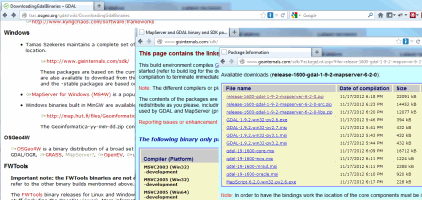
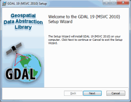
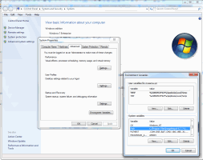
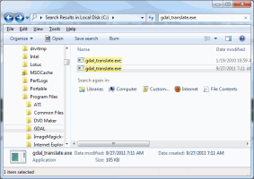
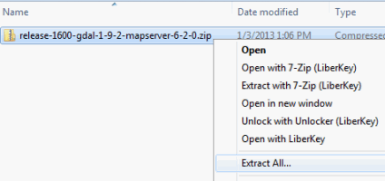
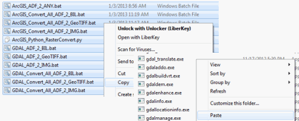

Setting up the GDAL Prerequisite
| Installing with the GDAL Installer | ||
| Step | Description | Screenshot |
| 1 | Download GDAL Binaries |  |
| The main GDAL site download page (http://trac.osgeo.org/gdal/wiki/DownloadingGdalBinaries) has a number of variants for precompiled binaries on windows. Any will work, but these directions presume that the version called "MSVC2010 (Win64) -release" available from the http://www.gisinternals.com/ site is the one used (bottom of the second list - latest release). The gdal-[version]-core.msi installer will put GDAL binaries at "C:\Program Files\GDAL\" by default. Currently, the downloads at gisinternals use an older version of GDAL (1.10.1 at the time of writing this), newer versions can be compiled or obtained using other downloads. The OSGeo for Windows (Open Source Compass for Windows or OSGeo4W) and FWTools (Open Source GIS Binary Kit) have precompiled versions of GDAL included that will work with these scripts if the directory containing gdal_translate.exe is added to the path. (See Using an Existing GDAL Installation.) |
||
| 2 | Run the MSI installer downloaded |  |
| Run the installer with all default options and choosing either a typical install or a complete install. | ||
| 3 | Add GDAL to the PATH Environment Variable |  |
| If not using the x64 installer mentioned in step 1 - or if you chose to install GDAL in a location other than "C:\Program Files\GDAL\", then the batch files will not find gdal_translate.exe unless the GDAL path is added to PATH environment variable. This is part of the System Control panel's Advanced Settings. You can right-click on "Computer" in windows explorer and choose "properties" as a shortcut to getting to the System Control panel. Once there, select "Advanced System Settings". This should prompt you for administrative access. Once that is open, press the "environment variables" button and then find the "Path" one and add the path to GDAL to that. |
||
| Using an Existing GDAL Installation | ||
| Step | Description | Screenshot |
| 1 | Find the path to gdal_translate.exe |  |
| If GDAL is already present on your system due to other software installations, you will need to find the location of the gdal_translate.exe. The simplest way is to use the windows explorer file search and look for "gdal_translate.exe". In the results, right-click and select "Open File Location". This should open a new window to the path that is needed. | ||
| 2 | Add the Path to gdal_translate.exe to the PATH Environment Variable | |
| Once you have found the path to the gdal_translate.exe, then it needs to be added to the PATH environment variable. This is part of the System Control panel's Advanced Settings. You can right-click on "Computer" in windows explorer and choose "properties" as a shortcut to getting to the System Control panel. Once there, select "Advanced System Settings". This should prompt you for administrative access. Once that is open, press the "environment variables" button and then find the "Path" one and add the path to GDAL to that. | ||
| Special Case: Installing GDAL without Admin privileges (Not Recommended) | ||
| Step | Description | Screenshot |
| NOTE: This set of instructions takes a precompiled version of GDAL and copies conversion scripts to the same folder. In order for it to work properly, the scripts must be run from the same folder. That is why this method is not recommended. | ||
| 1 | Download pre-compiled GDAL that is not in an MSI installer. | |
| The same gisinternals.com site (http://www.gisinternals.com) includes downloads that bundle mapserver and GDAL. Download one of the compiled binaries zip files that include mapserver. | ||
| 2 | Extract the GDAL binaries |  |
| Unzip the downloaded GDAL package. | ||
| 3 | Find GDAL binaries | |
| If you used the mapserver bundle from gisinternals.com, then the GDAL binaries will be under the bin\gdal\apps folder. If you have a different bundle, then you will need to search for gdal_translate.exe and find the path to the folder where it exists. You can use the windows explorer file search and look for "gdal_translate.exe". In the results, right-click and select "Open File Location". This should open a new window to the path that is needed. The gdal_translate does need some libraries and data files available in order to work. You can run gdal_translate and it will present an error message about missing DLL files. Search for these files and copy them to the same folder as gdal_translate or add the folder location of the DLL's to the PATH. Similarly, find the gdal-data folder and copy those files to the same folder as gdal_translate, or add the folder to the PATH. |
||
| 4 | Copy Conversion script to GDAL folder |  |
| Copy all the batch files and the Python files from the in the USGS_Raster_Conversion_Scripts (from all sub-folders too) to the directory found in step 3 above. The scripts need to be in the same folder as gdal_translate.exe, and not in sub-folders. | ||

 U.S. Department of the Interior |
U.S. Geological Survey
U.S. Department of the Interior |
U.S. Geological Survey
Page Contact Information: webmapping@usgs.gov
Page Last Modified: September 2015